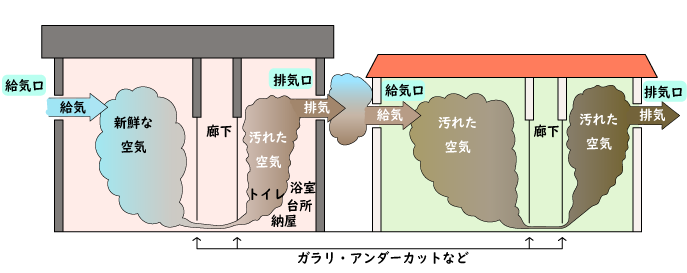
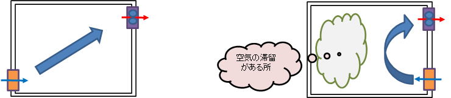
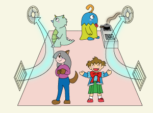
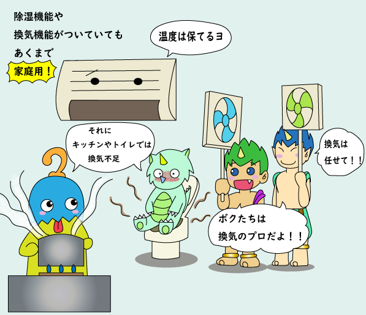

| 換気は室内の汚れた空気を排出し、屋外へ排出された空気の量だけ、屋外の新鮮な空気を取り込み、室内の空気の清浄度を保つための機能です。 しかし、汚れた空気を排出したといっても、排出された空気が再度外気として入って来たのでは、まったく換気としての機能は果たされません。 そこで、換気の計画を立てるには、 給気から排気までの空気の流れ（換気経路）を、考えなければなりません。 |
| 簡単に住居の空気の流れを描いた図です |
|  |
| 左右に配置してみると、どうでしょうか？ 左の住居では問題無く排気された空気が、右の住居では給気として取り込まれています。 これでは、右の住居は何の為の換気なの・・・？となります。 これは極端な例かも知れませんが実際にはこれとよく似た状態で換気が行われているケースもあるのではないでしょうか |
| 平面的に捉えた空気の流れ | |
 |
|
| 左下から外気が入り、右上の換気扇で排気され室内の空気はほぼ全体に入れ替わります。 | 右下から外気が入り、右上の換気扇で排出された場合は、室内の左側の空気は滞留した状態になり、全体としての空気移動が果せなくなります。 |
| 使用目的に応じて換気ルートを構成する事で、外気負荷（屋外の余分な熱）を抑え、効率的な換気を行う場合もあります。 |
|  | 左図の様に厨房のコンロ台があり、火気使用時の換気が必要だとしたら、少し贅沢な感もありますが、この様に室内の換気を分けます。 右の厨房用コンロ台に単独の換気を設け、左のエリアでは人を対象とした量の換気を構成する事で、エアコンへの外気負荷（屋外の余分な熱）や、コンロ台からの熱負荷も少なくなり、換気の効率も当然良くなります。 |
どの程度の換気量が必要なのかといいますと、
「法律で定められた換気量（法定換気量）」以上の換気量が、必要になります 。
| ①建築物の用途により換気量が異なる | |
| 法定換気量は建築物の用途に応じ、一人当たりの専有面積（一人が専有する計算上の面積）により、算出するものですので、当然換気量は違います。 店舗・マーケットでは、一人当たりの専有面積Nは、3㎡/人です。 （仮に、200㎡の店舗だとすると、V=20Af/N＝20×200/3≒1,340㎥/h が、換気量になります。） 一方、同じ面積の事務所では一人当たりの専有面積Nは、5㎡/人ですので、 （V=20Af/N＝20×200/5≒800㎥/hの、換気量で済みます。） 計算時に、N値（一人当たりの専有面積）を間違えると、イエローカード程度の問題では無くなりますね。しかし、こういう事は無いとは言い切れません。 |
| ②トイレや手洗い所（洗面所）の換気量 |
| 一般的なトイレの換気量は、1㎡当たり30㎥/hで算出します。 （換気回数で求める場合では、大便用：10～15回/h、小便用：5回～10回/h程度として求める方法もあります。） 手洗い場や洗面所の換気量は、1㎡当たり10㎥/hで算出します。 （換気回数で求める場合は、5回～10回/hとして求めます。） |
| ③屋内作業所内の換気量 | ||||||||||||||||||||||||||||||||||||||||||||||||||||||||
| 一般の居室とは異なり、目的用途に応じ換気量を算出しますが、機械室等の場合は「熱計算」によって算出する方法と、単に換気回数で求める方法がありますが、大きい方の値を換気量とするのが良いでしょう。 | ||||||||||||||||||||||||||||||||||||||||||||||||||||||||
| 熱計算で求める方法 Q＝3.6qs/｛CP×ρ×（ｔa－ｔo）｝ 換気回数で求める方法 Q＝A×ｈ×ｎ |
Q： 風量 ㎥/h qs＝ 発熱量 w CP＝ 空気比熱 1.0 kj/kg・℃ ρ＝ 空気密度 1.2 kg/㎥ ｔa＝ 許容温度 ℃ ｔo＝ 外気温度 ℃ A＝ 床面積 ㎡ h＝ 天井高さ m n＝ 換気回数 回/h |
|||||||||||||||||||||||||||||||||||||||||||||||||||||||
|
||||||||||||||||||||||||||||||||||||||||||||||||||||||||
| ④興行場の換気量 | ||||||||||||||||
| 興行場の客席を対象として、各都道府県の条例で定められています。 一例として以下に記載します。 |
||||||||||||||||
※ 空調送風機量は、熱負荷によります |
||||||||||||||||
| 注意しなければならない点は、
建築基準法の換気量は法律上の「最低換気量」です
ので、各都道府県・市等が独自で定めている「条例」に従って、換気量の算出方法が挙げられ、どちらが優先されるのかと言えば、当然各都道府県・市等の「条例」が優先されてます。 法定換気量で算出した換気量だからと言って、 各都道府県・市等の「条例」で定められた換気量に満たなければ 、もちろんイエローカード になります。 ここに記載していない施設の換気量の制約も、目的用途に応じてたくさん有りますが、一つの参考としてください。 |
| ①エアコンと換気 | |
| エアコンの目的
は、室内の空気を暖めたり冷やしたりする、
温度を対象とする機器です。 とは言っても勿論それだけでは無く、「除湿機能」を備えた機器や、「換気機能」を備えた機器も、実際には市場で販売されていますが、あくまでも「家庭用」としての範囲です。 しかし、「換気機能」が備わっているからといって、換気扇を無視する事は絶対に出来ません。 キッチンやトイレ等では換気が重要になり、キッチンではガスコンロがあれば、当然「火気使用器具」の制約を受け、適切な給気量が必要になります。 トイレでは、当然必要換気量として、1㎡当たり30㎥/h程度の換気量が必要になり、その換気量に応じた給気（外気）量が導入されます。 という事は、エアコンの換気機能があったとしても不足する場合もあり、エアコン本体が、換気モードに設定されていなければ、当然換気が果されない場合もあります。 平たく言えば、「エアコンは温度を対象とした機器で、換気は居室の空気を入れ替える機器」として捉えて頂く方が良いかも知れませんね。 |
|
|  |
| ②業務用として考えると |
| 家庭用以外を業務用として考えるとすれば、先程の区分け「エアコンは温度を対象とした装置で、換気は居室の空気を入れ替える装置」として、完全に独立しています。 エアコンは、室内で発生する熱（人の動作による熱や、照明や器具の発熱）、外壁や屋根、窓等の輻射熱、更に換気時の外気導入時の屋外空気の熱により、居室内の温度が上昇（若しくは下降）に伴い、自動的にあらかじめ設定された温度を維持する様に動作する事で、居室温度を一定条件に維持します。 一方換気は、必要換気量で選定された換気機器により、一般的にはスイッチを投入（ON）すれば連続的に換気機器が運転され、仮に第三種換気で有れば、屋内の汚染空気は換気機器で排出された量に等しい屋外の新鮮な空気が、給気口からフィルターを介し居室内に吸い込まれ、常に連続した換気がなされています。 この様に、エアコンと換気は全く異なる働きをしています。 普段何気なくエアコンと換気を運転している訳ですが、ここで少し気がかりになる事があります。 「エアコンは、自動的に温度を一定に保っている」 「換気は連続して稼働している」 この「エアコンの自動」と「換気の連続」についての説明は、もう少し後で説明する事にしましょう。 |
〒545-0021
大阪市阿倍野区阪南町3-8-26
TEL 06-6627-2516
FAX 06-6627-2518